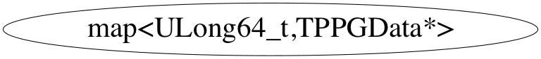

Function Members (Methods)
public:
| ~map<unsigned long long,TPPGData*,less<unsigned long long>,allocator<pair<const unsigned long long,TPPGData*> > >() | |
| map<unsigned long long,TPPGData*,less<unsigned long long>,allocator<pair<const unsigned long long,TPPGData*> > >::iterator | begin() |
| void | clear() |
| map<unsigned long long,TPPGData*,less<unsigned long long>,allocator<pair<const unsigned long long,TPPGData*> > >::size_type | count(const unsigned long long& x) const |
| bool | empty() const |
| map<unsigned long long,TPPGData*,less<unsigned long long>,allocator<pair<const unsigned long long,TPPGData*> > >::iterator | end() |
| void | erase(map<unsigned long long,TPPGData*,less<unsigned long long>,allocator<pair<const unsigned long long,TPPGData*> > >::iterator position) |
| map<unsigned long long,TPPGData*,less<unsigned long long>,allocator<pair<const unsigned long long,TPPGData*> > >::size_type | erase(const unsigned long long& x) |
| void | erase(map<unsigned long long,TPPGData*,less<unsigned long long>,allocator<pair<const unsigned long long,TPPGData*> > >::iterator first, map<unsigned long long,TPPGData*,less<unsigned long long>,allocator<pair<const unsigned long long,TPPGData*> > >::iterator last) |
| map<unsigned long long,TPPGData*,less<unsigned long long>,allocator<pair<const unsigned long long,TPPGData*> > >::iterator | find(const unsigned long long& x) |
| pair<map<unsigned long long,TPPGData*,less<unsigned long long>,allocator<pair<const unsigned long long,TPPGData*> > >::iterator,bool> | insert(const map<unsigned long long,TPPGData*,less<unsigned long long>,allocator<pair<const unsigned long long,TPPGData*> > >::value_type& x) |
| map<unsigned long long,TPPGData*,less<unsigned long long>,allocator<pair<const unsigned long long,TPPGData*> > >::iterator | insert(map<unsigned long long,TPPGData*,less<unsigned long long>,allocator<pair<const unsigned long long,TPPGData*> > >::iterator position, const map<unsigned long long,TPPGData*,less<unsigned long long>,allocator<pair<const unsigned long long,TPPGData*> > >::value_type& x) |
| void | insert(map<unsigned long long,TPPGData*,less<unsigned long long>,allocator<pair<const unsigned long long,TPPGData*> > >::iterator first, map<unsigned long long,TPPGData*,less<unsigned long long>,allocator<pair<const unsigned long long,TPPGData*> > >::iterator last) |
| void | insert(map<unsigned long long,TPPGData*,less<unsigned long long>,allocator<pair<const unsigned long long,TPPGData*> > >::reverse_iterator first, map<unsigned long long,TPPGData*,less<unsigned long long>,allocator<pair<const unsigned long long,TPPGData*> > >::reverse_iterator last) |
| map<unsigned long long,TPPGData*,less<unsigned long long>,allocator<pair<const unsigned long long,TPPGData*> > >::iterator | lower_bound(const unsigned long long& x) |
| map<unsigned long long,TPPGData*,less<unsigned long long>,allocator<pair<const unsigned long long,TPPGData*> > >() | |
| map<unsigned long long,TPPGData*,less<unsigned long long>,allocator<pair<const unsigned long long,TPPGData*> > >(const map<unsigned long long,TPPGData*,less<unsigned long long>,allocator<pair<const unsigned long long,TPPGData*> > >& x) | |
| map<unsigned long long,TPPGData*,less<unsigned long long>,allocator<pair<const unsigned long long,TPPGData*> > >(map<unsigned long long,TPPGData*,less<unsigned long long>,allocator<pair<const unsigned long long,TPPGData*> > >::iterator first, map<unsigned long long,TPPGData*,less<unsigned long long>,allocator<pair<const unsigned long long,TPPGData*> > >::iterator last) | |
| map<unsigned long long,TPPGData*,less<unsigned long long>,allocator<pair<const unsigned long long,TPPGData*> > >(map<unsigned long long,TPPGData*,less<unsigned long long>,allocator<pair<const unsigned long long,TPPGData*> > >::reverse_iterator first, map<unsigned long long,TPPGData*,less<unsigned long long>,allocator<pair<const unsigned long long,TPPGData*> > >::reverse_iterator last) | |
| map<unsigned long long,TPPGData*,less<unsigned long long>,allocator<pair<const unsigned long long,TPPGData*> > >::size_type | max_size() const |
| map<unsigned long long,TPPGData*,less<unsigned long long>,allocator<pair<const unsigned long long,TPPGData*> > >& | operator=(const map<unsigned long long,TPPGData*,less<unsigned long long>,allocator<pair<const unsigned long long,TPPGData*> > >& x) |
| TPPGData*& | operator[](const unsigned long long& x) |
| map<unsigned long long,TPPGData*,less<unsigned long long>,allocator<pair<const unsigned long long,TPPGData*> > >::reverse_iterator | rbegin() |
| map<unsigned long long,TPPGData*,less<unsigned long long>,allocator<pair<const unsigned long long,TPPGData*> > >::reverse_iterator | rend() |
| map<unsigned long long,TPPGData*,less<unsigned long long>,allocator<pair<const unsigned long long,TPPGData*> > >::size_type | size() const |
| void | swap(map<unsigned long long,TPPGData*,less<unsigned long long>,allocator<pair<const unsigned long long,TPPGData*> > >&) |
| map<unsigned long long,TPPGData*,less<unsigned long long>,allocator<pair<const unsigned long long,TPPGData*> > >::iterator | upper_bound(const unsigned long long& x) |
Class Charts



Function documentation
iterator& operator=(const map<unsigned long long,TPPGData*,less<unsigned long long>,allocator<pair<const unsigned long long,TPPGData*> > >& x)
iterator end()
reverse_iterator rbegin()
reverse_iterator rend()
pair<map::iterator, bool> insert(const map<unsigned long long,TPPGData*,less<unsigned long long>,allocator<pair<const unsigned long long,TPPGData*> > >::value_type& x)
iterator insert(iterator position, const value_type& x)
void insert(InputIterator first, InputIterator last)
void insert(iterator first, iterator last)
void erase(iterator position)
size_type erase(const Key& x)
void erase(map<unsigned long long,TPPGData*,less<unsigned long long>,allocator<pair<const unsigned long long,TPPGData*> > >::iterator first, map<unsigned long long,TPPGData*,less<unsigned long long>,allocator<pair<const unsigned long long,TPPGData*> > >::iterator last)
void swap(map<unsigned long long,TPPGData*,less<unsigned long long>,allocator<pair<const unsigned long long,TPPGData*> > >& )
void clear()
observers: key_compare key_comp() const; value_compare value_comp() const; _lib.map.ops_ map operations:
size_type count(const unsigned long long& x) const